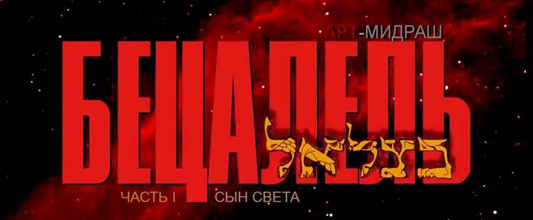

Как помочь проекту ТОРААРТ в два клика?
Я знаю несколько способов, как мы могли бы сотрудничать, и хочу поделиться этим с вами. И это не потребует от вас больших усилий и жертв. Лишь нажатие кнопки мыши. Правда, это совсем просто! И опыт показывает, что не смотря на поразительную простоту, - это работает!
Конечно, помочь можно не только в два, но и в один клик и в четыре…, но об этом чуть ниже ;-) .

УЗКАЯ НИША
Многочисленные материалы в сети о том, как создать успешный, читаемый сайт, все как один в первую очередь рекомендуют выбрать популярную, раскрученную тему. Все, что связано с зарабатыванием денег в сети, едой, похуданием, модой, косметикой, приколами и развлекухой, словом, темы, которые интересны всем или почти всем. И вполне естественно, что на таковые найдется немало читателей и зрителей.. Это априори гарантирует интерес к блогу. Я избрал "узкую нишу", поскольку моя цель - делиться мыслями, которые мне интересны и важны (творчество и библейская вера). Темы эти интересны далеко не каждому читателю - "УЗКАЯ НИША".
Строю сукку /кущщу/ при входе в дом
Значит ли это, что нужно опустить руки и смириться с тем, что блог все равно никто читать не будет? Один очень известный рабби в таких случаях говаривал: "Вы еще не до крови сражались..." Большой крови, надеюсь, все же не будет, но... Задача в том, чтобы продолжать взбивать лапками молоко, до тех пор, пока оно не превратится сначала в сметану, затем и в творог и твердый сыр... Т.е., мы с вами, уважаемый читатель, еще не предприняли все, что в наших силах, чтобы вопиять к небесам о несправедливости судьбы... О чем это я? Есть еще многое сделать прежде, чем можно будет возгласить: "веру сохранил, течение жизни совершил"!
Теперь к делу. Даже для самого продвинутого блогера важно активное участие тех, для кого он трудится и публикует. О каком участии идет речь и как может поддержать понравившийся проект человек, у которого нет много времени, сил и прочего?
***
7 СПОСОБОВ ПОМОЧЬ ПРОЕКТУ ТОРААРТ
1. Самое простое - репосты и лайки (во ВСЕХ сетях, где вы есть (это важно!)). Как лайки, комменты и прочие "знаки внимания" помогают продвижению и развитию блога? - см. здесь
2. Подпишитесь в группах ТОРААРТ в соц. сетях (facebook, YouTube, ВКОНТАКТЕ, Одноклассники, Google Plus, Livejournal, Twitter, Tumblr, Instagram). Ваша активность в группах ТОРААРТ соц. сетей помогает привлечению тех, кто меня не знает, но знает вас.
3. Комменты и рекомендации (чем больше, тем лучше) под статьями (даже самые короткие и НЕ обязательно хвалебные. Конструктивная критика - приветствуется). Если вы о чем-то заинтересовано говорите, это может заинтересовать и ваших друзей.
4. Репосты на других сайтах, форумах и т.п. Это для «фанатов» бродить по форумам. Если тема форума хотя бы косвенно связана со статьями ТОРААРТ, то снабдив ее своим краткой рекомендацией, вы можете оставить релевантную ссылку на статью блога.
5. Если вы заметили ошибку, неполадку, сбой, пожалуйста сообщите мне об этом (либо в личку в ф.б. – кнопка моей страницы на ф.б. справа сверху на черном фоне), либо напишите в комментах прямо на той странице, где требуется исправление.
6. Высший пилотаж (этот способ требует гораздо большего количества кликов :-P ) - активная техническая (например, СЕО) и простой набор текста (с видео). Если вы способны и готовы помочь в этом, напишите мне в ф.б., или ВКонтакте в личку.
7. Благословения и молитвы – это то, что помогает даже без клика. Но! Одно другому не мешает. Напишите мне, если вы решили молиться о проекте ТОРААРТ регулярно. Для меня это будет реальной поддержкой.
Заставка к моему фильму "Бецалель - Сын Света" 
Я НУЖДАЮСЬ В ВАШИХ СОВЕТАХ И КОНСТРУКТИВНОЙ КРИТИКЕ
1. Важны ваши предложения и замечания обо всем, что связано с блогом - деление на рубрики, оглавление, устройство и коммуникации сайта, словом все, что связано с удобством поиска нужной вам информации.
2. Ваши советы по оформлению сайта и характеру подачи материала.
3. Какие темы, не получили, по-вашему, должного внимания?
4. Какие статьи, темы, рубрики блога вас особенно заинтересовали?
5. Что бы вы хотели видеть иначе, изменить?
*** ПРОСТО НАПИШИТЕ, ЧТО есть у вас сказать в комментах под этим постом. ***
Помните, ваши РЕПОСТЫ, лайки, комментарии и любая другая активность на страницах блога, в соц. сетях и пр. - это бензин для поисковых машин. И именно от вас зависит, насколько далеко эти машины смогут завести и продвинуть НАШ С ВАМИ блог ТОРАаРТ. Любая ваша помощь будет для меня существенной и важной. А главное поможет тем, кто ищет информацию о творчестве и вере.
Украшенная сукка готова к празднику
К КОЛЛЕГАМ – БЛОГЕРАМ, помещающим мои материалы - спасибо за сотрудничество! Я взволнован, что уже на следующий день 5-7 сайтов и блогов перетаскивают к себе мои материалы. Это для меня большая честь! Единственное, что хотелось бы напомнить – помещайте, пожалуйста, активные ссылки на оригинал. И, если это не противоречит вашим принципам – разместите, пожалуйста, баннеры блога ТОРААРТ.

Если вы посещаете ЮТУБ-пространство, см. сюжет, в котором поясняется, как можно помочь видео блогеру (в нашем случае проекту TORAART ) в продвижении понравившихся вам видео: